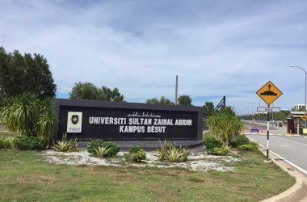

Software Developer
My name is Amalia Al Fathiah Binti Abdul Rahman.
I am a front-end developer experienced in developing
a responsive and adaptive design.I am goal-driven, have good problem solving, verbal communication
and interpersonal skills.
Name:Amalia Al Fathiah Binti Abdul Rahman
Age:22 Years
Email:amaliarahman@gmail.com
Address:PT 205 Taman Norashikin, Kampung Padang Lembek,16450 Ketereh, Kota Bharu, Kelantan
My Life
Degree - Unisza
I continued my bachelor's degree in internet computer science at unisza for 4 years.
I am a graduate student of STPM and I had to overcome various obstacles throughout my studies.
There are ups and downs when I think many times to stop studying but I still have the spirit to continue this struggle until today.
I am very proud of myself.

Enviro-GrimeForest Explorace
I actively participate in programs organized at unisza.
One of them is this program because I try to interact with other people and reduce my shyness.
I really like this program because I have met many friends who are sporty and care about each other very much.
This program taught me how to manage the program well and help each other.
Like Motorbike
I really like motorbikes because I like speed and whenever I'm emotional I will ride a motorbike fast.
That way can relieve my anger. I've always dreamed of buying that motor but still can't afford it.
I hope I can buy that motor one day.